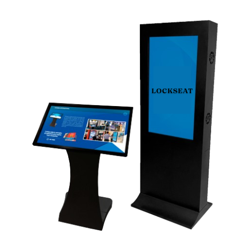

Soluções inteligentes para proteger o que realmente importa.

- Travas Automáticas: Dispositivos instalados em cada assento que podem ser trancados ou destrancados remotamente.
- Controle de Acesso: Utiliza métodos como QR Codes, cartões RFID, senhas ou aplicativos móveis para liberar o assento.
- Software de Gerenciamento: Plataforma centralizada que permite a configuração e monitoramento das travas dos assentos, gerenciando reservas, horários de acesso e registros de utilização.
- Sensores: Sensores de ocupação que detectam se o assento está sendo utilizado, integrando essas informações ao sistema de gerenciamento.
Vantagens
- Segurança e Controle: Garante que apenas os portadores legítimos possam acessar os assentos designados, reduzindo o risco de fraudes e melhorando a segurança.
- Experiência do Usuário: Elimina a necessidade de filas e ingressos físicos, proporcionando uma experiência de entrada rápida e conveniente.
- Gestão Eficiente: Facilita a administração de grandes volumes de espectadores, permitindo uma gestão mais eficiente e organizada dos assentos.
- Personalização e Flexibilidade: Permite personalizar a configuração das travas para diferentes tipos de eventos e locais, adaptando-se às necessidades específicas de cada situação.

Aplicações
- Cinemas e Teatros: Gestão automatizada de assentos, melhorando a experiência dos espectadores e a eficiência operacional.
- Estádios e Arenas: Controle de acesso a assentos em eventos esportivos e shows, garantindo segurança e organização.
- Conferências e Eventos Corporativos: Gestão de assentos em conferências, feiras e eventos empresariais, facilitando a logística e o controle de acesso.
- Transportes: Aplicação em assentos de trens, ônibus e aviões para gerenciamento de reservas e controle de acesso.
O sistema de automação de travas automáticas em assentos representa um avanço significativo na forma como eventos e locais de entretenimento gerenciam o acesso e a ocupação de assentos, proporcionando uma solução moderna, segura e eficiente.